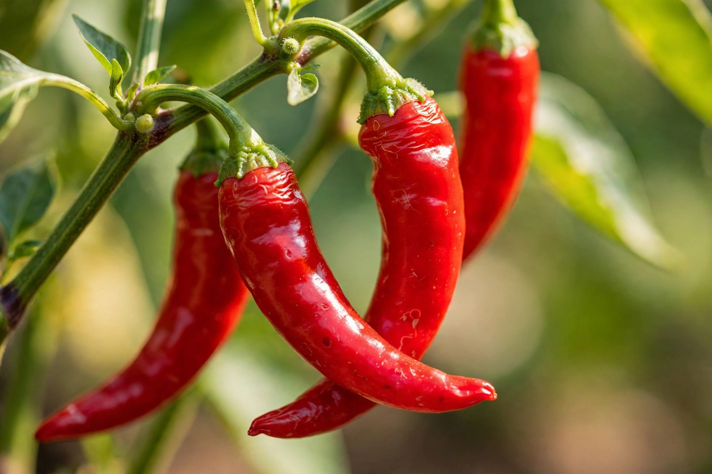

From Wikipedia, the free encyclopedia
| Capsaicin | |
 Capsaicin gives chili peppers their pungency | |
| IUPAC name | (E)-N-[(4-hydroxy-3-methoxyphenyl)methyl]-8-methylnon-6-enamide |
| Chemical formula | C18H27NO3 |
| Molar mass | 305.42 g/mol |
| Melting point | 62–65 °C |
| Scoville heat units | 16,000,000 (pure) |
| Receptor | TRPV1 (vanilloid receptor) |
| CAS number | 404-86-4 |
Capsaicin (8-methyl-N-vanillyl-6-nonenamide) is an active component of chili peppers, which are plants belonging to the genus Capsicum. It is a chemical irritant for mammals, including humans, and produces a sensation of burning in any tissue with which it comes into contact. Capsaicin and several related alkaloids are called capsaicinoids and are produced as secondary metabolites by chili peppers, probably as deterrents against mammalian herbivores and fungi, while birds — which disperse the seeds — are insensitive to it.
Capsaicin was first extracted in impure form in 1816 by Christian Friedrich Bucholz. In 1876 the British chemist John Clough Thresh isolated it in almost pure crystalline form and gave it the name "capsaicin". The pure compound was isolated by Karl Micko in 1898, its structure determined by E. K. Nelson in 1919, and it was first synthesised in 1930 by Ernst Späth and Stephen F. Darling. In 1961 Japanese chemists isolated the family of related substances now called capsaicinoids.
The burning and pain sensations associated with capsaicin result from its chemical interaction with sensory neurons. Capsaicin binds to the vanilloid receptor TRPV1, an ion channel on pain-sensing nerve endings that is normally activated by heat (above about 43 °C), acidity and physical abrasion. Binding opens the channel and produces the sensation of heat or burning without actual thermal damage — which is why spicy food feels "hot". Prolonged exposure over-stimulates and then desensitises these neurons, depleting substance P and producing analgesia, an effect exploited in topical pain-relief preparations. The pungency of peppers is measured on the Scoville scale: pure capsaicin rates 16 million Scoville heat units, compared with about 2.7 million for the hottest bred peppers such as Pepper X.
Beyond its culinary role in cuisines worldwide, capsaicin is used as:
Capsaicin is a potent irritant: contact with eyes and mucous membranes causes intense burning, lacrimation and temporary incapacitation, and inhalation provokes coughing and bronchospasm. Symptoms are treated by removing the exposure; oils and dairy products (whose casein acts as a detergent) relieve oral burning better than water. Extremely high doses are toxic to mammals, though culinary exposure is far below harmful levels.